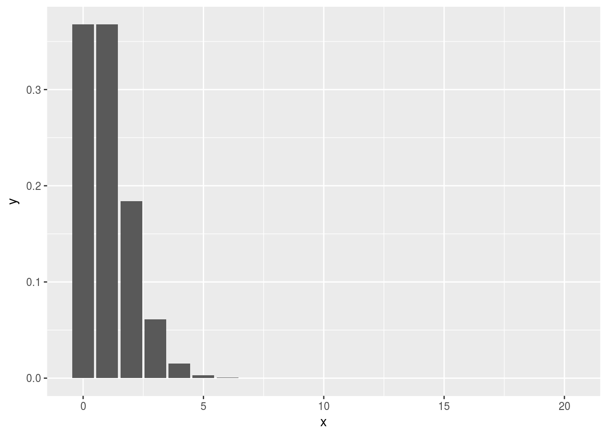

Chapter 7 Regression tecniques in Software defect prediction
The purpose of this Section is to show the basic ways of estimating software defects by means of several regression models. We apply the techniques on the Equinox dataset. In what follows we use the same data points for training and testing, for the sake of clarity.
7.1 Zero Poison
When estimating the number of defects but we have many zeroes, we can use different types of zero Poison regression.
7.1.1 Load packages
## Loading required package: pscl## Classes and Methods for R developed in the## Political Science Computational Laboratory## Department of Political Science## Stanford University## Simon Jackman## hurdle and zeroinfl functions by Achim Zeileis## Loading required package: boot##
## Attaching package: 'boot'## The following object is masked from 'package:lattice':
##
## melanoma##
## Attaching package: 'corrplot'## The following object is masked from 'package:pls':
##
## corrplot7.1.2 The number of Software Defects. Count Data
The number of software defects found in a software product can be assimilated to the “count data” concept that is used in many disciplines, because the outcome,number of defects, of whatever software process is a count. There are several ways of analyzing count data. The classical Poisson, negative binomial regression model can be augmented with zero-inflated poisson and zero-inflated negative binomial models to cope with the excess of zeros in the count data. Zero-inflated means that the response variable -software defects- contains more zeros than expected, based on the Poisson or negative binomial distribution. A simple histogram may show the trend. Count variables appear in different areas and have common properties: their range is a non-negative integer(0, 1, ….); and their values are skewed towards zero, because few values are high.
7.1.3 Normal Regression
The normal regression provided by the general linear model (glm in R) is not appropriate for count data because of the non-normality of the residuals. Usually the variance of the residuals increase with their value.
7.1.4 Poisson Regression
This model can be used if there is no excess in the number of zeros. The poisson model is the most common and it is a probability distribution that is controlled by a single parameter, \(\lambda\)

7.1.5 Negative binomial
The negative binomial takes into account overdispersion in the count outcome. When there are more high values or zeros than expected the mean and the variance of the sample data are different.
7.1.6 Zero-Inflated Poisson Regression ZIP
This is a model that can deal with the excess of zeros by explicitly modeling the part that generates the false zeros. There may be different sources for the excess of zeros. The count process is modeled by a Poisson model.
7.1.7 Zero-Inflated Negative Binomial ZINB
In this case, besides taking into account the excess of zeros the count process is modeled by a Negative Binomial model that allows for overdispersion from the non-zero counts.
7.1.8 Read Data
# setwd("~/DocProjects/zeropoisson")
auxfile <- read.table("./datasets/defectPred/BPD/single-version-ck-oo.csv", header = TRUE, sep = ";")
myvars <- c('bugs', 'wmc', 'rfc', 'cbo', 'lcom', 'numberOfLinesOfCode')
# wmd weighted methods per class Despite its long name, WMC is simply the method count for a class.
# rfc response for a class set of methods that can potentially be executed in response to a message received by an object of that class
# cbo coupling between objects number of classes to which a class is coupled
# lcom lack of cohesion
equinox <- auxfile[myvars]
names(equinox)[names(equinox) == 'bugs'] <- 'count'7.1.9 Plot histogram
- The first histogram shows the high number of modules with no defects.
- The second histogram shows the distribution of the non-zero values.
hist(equinox$count,breaks="FD")## histogram with x axis in log10 scale
ggplot(equinox, aes(count)) +
geom_histogram() +
scale_x_log10()## Warning: Transformation introduced infinite values in continuous x-axis## `stat_bin()` using `bins = 30`. Pick better value with `binwidth`.## Warning: Removed 195 rows containing non-finite values (stat_bin).7.1.10 Correlation among variables
The correlation plots and the tables show a strong correlation among some variables.
## count wmc rfc cbo lcom
## count 1.0000000 0.6151012 0.5786541 0.7065440 0.6327475
## wmc 0.6151012 1.0000000 0.9656904 0.7647778 0.8208613
## rfc 0.5786541 0.9656904 1.0000000 0.7804111 0.8283116
## cbo 0.7065440 0.7647778 0.7804111 1.0000000 0.7208646
## lcom 0.6327475 0.8208613 0.8283116 0.7208646 1.0000000
## numberOfLinesOfCode 0.6404813 0.9725794 0.9683453 0.7932072 0.8263641
## numberOfLinesOfCode
## count 0.6404813
## wmc 0.9725794
## rfc 0.9683453
## cbo 0.7932072
## lcom 0.8263641
## numberOfLinesOfCode 1.0000000## count wmc rfc cbo
## Min. : 0.0000 Min. : 0.00 Min. : 0.00 Min. : 0.000
## 1st Qu.: 0.0000 1st Qu.: 2.00 1st Qu.: 5.00 1st Qu.: 2.000
## Median : 0.0000 Median : 12.00 Median : 18.00 Median : 6.000
## Mean : 0.7531 Mean : 32.64 Mean : 58.34 Mean : 9.673
## 3rd Qu.: 1.0000 3rd Qu.: 36.00 3rd Qu.: 61.50 3rd Qu.:13.250
## Max. :13.0000 Max. :534.00 Max. :1009.00 Max. :77.000
## lcom numberOfLinesOfCode
## Min. : 0.0 Min. : 0.00
## 1st Qu.: 1.0 1st Qu.: 7.75
## Median : 15.0 Median : 45.00
## Mean : 124.2 Mean : 122.02
## 3rd Qu.: 66.0 3rd Qu.: 130.00
## Max. :2775.0 Max. :1805.007.1.11 Classical Regression
First we fit a classical regression model using the variables
cbo,lcom,wmc,rfc. Please note that the last section that compares models with different combinations of variables.The parameters of interest are the intercept and the slope coefficients
##
## Call:
## glm(formula = count ~ cbo + lcom + wmc + rfc, family = gaussian,
## data = equinox)
##
## Deviance Residuals:
## Min 1Q Median 3Q Max
## -3.5540 -0.4498 -0.0248 0.3129 6.2884
##
## Coefficients:
## Estimate Std. Error t value Pr(>|t|)
## (Intercept) -0.0816095 0.0749013 -1.090 0.277
## cbo 0.0750713 0.0078977 9.505 < 2e-16 ***
## lcom 0.0012674 0.0002786 4.549 7.68e-06 ***
## wmc 0.0154600 0.0034539 4.476 1.06e-05 ***
## rfc -0.0094888 0.0018973 -5.001 9.42e-07 ***
## ---
## Signif. codes: 0 '***' 0.001 '**' 0.01 '*' 0.05 '.' 0.1 ' ' 1
##
## (Dispersion parameter for gaussian family taken to be 0.9355133)
##
## Null deviance: 686.25 on 323 degrees of freedom
## Residual deviance: 298.43 on 319 degrees of freedom
## AIC: 904.84
##
## Number of Fisher Scoring iterations: 27.2 Poisson Regression
- Regression coefficients must be interpreted with the log transformation.
##
## Call:
## glm(formula = count ~ cbo + lcom + wmc + rfc, family = poisson,
## data = equinox)
##
## Deviance Residuals:
## Min 1Q Median 3Q Max
## -3.0940 -0.8936 -0.7937 0.5785 2.7547
##
## Coefficients:
## Estimate Std. Error z value Pr(>|z|)
## (Intercept) -1.1797490 0.1011751 -11.660 < 2e-16 ***
## cbo 0.0518008 0.0056195 9.218 < 2e-16 ***
## lcom 0.0001574 0.0001744 0.903 0.367
## wmc 0.0114261 0.0018959 6.027 1.67e-09 ***
## rfc -0.0060023 0.0011625 -5.163 2.43e-07 ***
## ---
## Signif. codes: 0 '***' 0.001 '**' 0.01 '*' 0.05 '.' 0.1 ' ' 1
##
## (Dispersion parameter for poisson family taken to be 1)
##
## Null deviance: 588.43 on 323 degrees of freedom
## Residual deviance: 316.67 on 319 degrees of freedom
## AIC: 632.15
##
## Number of Fisher Scoring iterations: 57.3 Compare to Null Model (intercept)
- The chi-squared test on the difference of log likelihoods is used to compare the poisson model to the intercept. It yields a high significant p-value; thus, the model is statistically significant.
- All of the predictors in both the count and inflation portions of the model are statistically significant. This model fits the data significantly better than the null model, i.e., the intercept-only model.
- Since we have five predictor variables in the full model, the degrees of freedom for chi-squared test is 5.
# five variables in the full model --> df = 5
nullmodel <- update(defects_pois, . ~ 1)
pchisq(2 * (logLik(defects_pois) - logLik(nullmodel)), df = 5, lower.tail=FALSE)## 'log Lik.' 1.171544e-56 (df=5)7.4 Negative Binomial
# negative binomial regression
defects_negbinom <- glm.nb(count ~ cbo + lcom + wmc + rfc,
data = equinox)## Warning in glm.nb(count ~ cbo + lcom + wmc + rfc, data = equinox):
## alternation limit reached# summary of results
summary(defects_negbinom)##
## Call:
## glm.nb(formula = count ~ cbo + lcom + wmc + rfc, data = equinox,
## init.theta = 6.219388589, link = log)
##
## Deviance Residuals:
## Min 1Q Median 3Q Max
## -2.4508 -0.8535 -0.7505 0.5116 2.5068
##
## Coefficients:
## Estimate Std. Error z value Pr(>|z|)
## (Intercept) -1.2780140 0.1140133 -11.209 < 2e-16 ***
## cbo 0.0583198 0.0071047 8.209 2.24e-16 ***
## lcom 0.0001011 0.0002150 0.470 0.638
## wmc 0.0118841 0.0024655 4.820 1.43e-06 ***
## rfc -0.0061535 0.0014455 -4.257 2.07e-05 ***
## ---
## Signif. codes: 0 '***' 0.001 '**' 0.01 '*' 0.05 '.' 0.1 ' ' 1
##
## (Dispersion parameter for Negative Binomial(6.2194) family taken to be 1)
##
## Null deviance: 507.19 on 323 degrees of freedom
## Residual deviance: 278.33 on 319 degrees of freedom
## AIC: 628.55
##
## Number of Fisher Scoring iterations: 1
##
##
## Theta: 6.22
## Std. Err.: 3.14
## Warning while fitting theta: alternation limit reached
##
## 2 x log-likelihood: -616.551# overdispersion
summary(defects_negbinom)$theta## [1] 6.2193897.4.1 Zero Inflated Poisson
# zero-inflated Poisson regression
# the | seperates the count model from the logistic model
defects_zip <- zeroinfl(count ~ cbo + lcom + wmc + rfc | numberOfLinesOfCode, data =
equinox, link = "logit", dist = "poisson", trace = FALSE)
# summary of results
summary(defects_zip)##
## Call:
## zeroinfl(formula = count ~ cbo + lcom + wmc + rfc | numberOfLinesOfCode,
## data = equinox, dist = "poisson", link = "logit", trace = FALSE)
##
## Pearson residuals:
## Min 1Q Median 3Q Max
## -2.3683 -0.6880 -0.2784 0.4692 3.8402
##
## Count model coefficients (poisson with log link):
## Estimate Std. Error z value Pr(>|z|)
## (Intercept) -0.8641763 0.1240264 -6.968 3.22e-12 ***
## cbo 0.0433784 0.0055946 7.754 8.93e-15 ***
## lcom 0.0002456 0.0001123 2.188 0.0287 *
## wmc 0.0097291 0.0019739 4.929 8.27e-07 ***
## rfc -0.0051994 0.0010795 -4.816 1.46e-06 ***
##
## Zero-inflation model coefficients (binomial with logit link):
## Estimate Std. Error z value Pr(>|z|)
## (Intercept) 1.6749 0.6869 2.438 0.0147 *
## numberOfLinesOfCode -0.1657 0.1118 -1.483 0.1380
## ---
## Signif. codes: 0 '***' 0.001 '**' 0.01 '*' 0.05 '.' 0.1 ' ' 1
##
## Number of iterations in BFGS optimization: 28
## Log-likelihood: -296.5 on 7 Df7.4.2 Zero Inflated Negative Binomial
# zero-inflated negative binomial regression
# the | seperates the count model from the logistic model
defects_zinb <- zeroinfl(count ~ cbo + lcom + wmc + rfc | numberOfLinesOfCode, data =
equinox, link = "logit", dist = "negbin", trace = FALSE, EM = FALSE)## Warning in sqrt(diag(vc)[np]): NaNs produced# summary of results
summary(defects_zinb)## Warning in sqrt(diag(object$vcov)): NaNs produced##
## Call:
## zeroinfl(formula = count ~ cbo + lcom + wmc + rfc | numberOfLinesOfCode,
## data = equinox, dist = "negbin", link = "logit", trace = FALSE,
## EM = FALSE)
##
## Pearson residuals:
## Min 1Q Median 3Q Max
## -1.8809 -0.6721 -0.2745 0.4487 3.7922
##
## Count model coefficients (negbin with log link):
## Estimate Std. Error z value Pr(>|z|)
## (Intercept) -0.9088131 0.1282227 -7.088 1.36e-12 ***
## cbo 0.0450277 0.0059527 7.564 3.90e-14 ***
## lcom 0.0002357 NA NA NA
## wmc 0.0100136 0.0022232 4.504 6.67e-06 ***
## rfc -0.0052856 0.0013063 -4.046 5.20e-05 ***
## Log(theta) 2.6591002 NA NA NA
##
## Zero-inflation model coefficients (binomial with logit link):
## Estimate Std. Error z value Pr(>|z|)
## (Intercept) 1.7143 0.7618 2.250 0.0244 *
## numberOfLinesOfCode -0.1894 0.1332 -1.422 0.1551
## ---
## Signif. codes: 0 '***' 0.001 '**' 0.01 '*' 0.05 '.' 0.1 ' ' 1
##
## Theta = 14.2834
## Number of iterations in BFGS optimization: 42
## Log-likelihood: -295.8 on 8 Df7.4.3 Comparing models with Vuong test
The Vuong test compares the zero-inflated model with an ordinary Poisson regression model.
The result of the test statistic is significant, indicating that the zero-inflated model is superior to the standard Poisson model.
vuong(defects_zip, defects_pois)## Vuong Non-Nested Hypothesis Test-Statistic:
## (test-statistic is asymptotically distributed N(0,1) under the
## null that the models are indistinguishible)
## -------------------------------------------------------------
## Vuong z-statistic H_A p-value
## Raw 3.143494 model1 > model2 0.00083472
## AIC-corrected 2.713456 model1 > model2 0.00332927
## BIC-corrected 1.900524 model1 > model2 0.02868219vuong(defects_zip, defects_negbinom)## Vuong Non-Nested Hypothesis Test-Statistic:
## (test-statistic is asymptotically distributed N(0,1) under the
## null that the models are indistinguishible)
## -------------------------------------------------------------
## Vuong z-statistic H_A p-value
## Raw 2.468425 model1 > model2 0.0067854
## AIC-corrected 2.050671 model1 > model2 0.0201495
## BIC-corrected 1.260961 model1 > model2 0.10366157.4.4 Compute Confidence Intervals for intercept and variables. ZIP version
- We may confidence intervals for all the parameters and the exponentiated parameters using bootstrapping.
- We may compare these results with the regular confidence intervals based on the standard errors.
dput(round(coef(defects_zip, "count"), 4))## structure(c(-0.8642, 0.0434, 2e-04, 0.0097, -0.0052), .Names = c("(Intercept)",
## "cbo", "lcom", "wmc", "rfc"))dput(round(coef(defects_zip, "zero"), 4))## structure(c(1.6749, -0.1657), .Names = c("(Intercept)", "numberOfLinesOfCode"
## ))# change list of parameters 1, 3, 5 etc
### FINAL MODEL SELECTED ZERO INFLATED POISSON
f <- function(data, i) {
require(pscl)
m <- zeroinfl(count ~ cbo + lcom + wmc + rfc | numberOfLinesOfCode,
data = data[i, ], dist = "poisson",
start = list(count = c(-0.8642, 0.0434, 2e-04, 0.0097, -0.0052), zero = c(1.6749, -0.1657)))
as.vector(t(do.call(rbind, coef(summary(m)))[, 1:2]))
}
set.seed(10)
(res <- boot(equinox, f, R = 1200, parallel = "snow", ncpus = 4))##
## ORDINARY NONPARAMETRIC BOOTSTRAP
##
##
## Call:
## boot(data = equinox, statistic = f, R = 1200, parallel = "snow",
## ncpus = 4)
##
##
## Bootstrap Statistics :
## original bias std. error
## t1* -0.8641784331 -2.303129e-02 1.316306e-01
## t2* 0.1240279149 1.058718e-02 3.483776e-02
## t3* 0.0433783993 5.727146e-04 7.267716e-03
## t4* 0.0055945857 1.619122e-03 2.941890e-03
## t5* 0.0002456421 -1.532408e-05 2.769170e-04
## t6* 0.0001122920 6.739868e-05 1.380387e-04
## t7* 0.0097291337 4.351203e-04 2.957174e-03
## t8* 0.0019739001 5.735321e-04 1.386695e-03
## t9* -0.0051993761 -1.748856e-04 1.561095e-03
## t10* 0.0010795051 3.518046e-04 5.972876e-04
## t11* 1.6750251424 6.975388e-01 5.261811e+00
## t12* 0.6869578264 9.237353e-01 2.058666e+01
## t13* -0.1657573309 -9.363010e-02 5.468317e-01
## t14* 0.1117748277 6.984320e-02 2.075220e+00## basic parameter estimates with percentile and bias adjusted CIs
parms <- t(sapply(c(1, 3, 5, 7, 9, 11, 13), function(i) {
out <- boot.ci(res, index = c(i, i + 1), type = c("perc", "bca"))
with(out, c(Est = t0, pLL = percent[4], pUL = percent[5],
bcaLL = bca[4], bcaUL = bca[5]))
}))
print("Confidence intervals for ZIP, BOOTED")## [1] "Confidence intervals for ZIP, BOOTED"## add row names
names(coef(defects_zip))## [1] "count_(Intercept)" "count_cbo"
## [3] "count_lcom" "count_wmc"
## [5] "count_rfc" "zero_(Intercept)"
## [7] "zero_numberOfLinesOfCode"nrow(parms)## [1] 7row.names(parms) <- names(coef(defects_zip))
## print results
parms## Est pLL pUL
## count_(Intercept) -0.8641784331 -1.155311776 -0.6405252226
## count_cbo 0.0433783993 0.030104286 0.0594077144
## count_lcom 0.0002456421 -0.000363527 0.0007406458
## count_wmc 0.0097291337 0.005179901 0.0187585385
## count_rfc -0.0051993761 -0.009329260 -0.0028504289
## zero_(Intercept) 1.6750251424 0.712867236 5.0130270331
## zero_numberOfLinesOfCode -0.1657573309 -0.594861582 -0.0682408298
## bcaLL bcaUL
## count_(Intercept) -1.105649479 -0.565552024
## count_cbo 0.026293665 0.058188886
## count_lcom -0.000324895 0.000781505
## count_wmc 0.005126268 0.018329267
## count_rfc -0.009010388 -0.002658944
## zero_(Intercept) 0.377152297 3.928757887
## zero_numberOfLinesOfCode -0.547781601 -0.058402161print("Confidence intervals for ZIP , NORMAL BASED APPROXIMATION")## [1] "Confidence intervals for ZIP , NORMAL BASED APPROXIMATION"## compare with normal based approximation
confint(defects_zip)## 2.5 % 97.5 %
## count_(Intercept) -1.107264e+00 -0.6210889471
## count_cbo 3.241321e-02 0.0543435607
## count_lcom 2.555382e-05 0.0004657304
## count_wmc 5.860348e-03 0.0135978860
## count_rfc -7.315162e-03 -0.0030835806
## zero_(Intercept) 3.286748e-01 3.0212006348
## zero_numberOfLinesOfCode -3.847732e-01 0.0532838577- Estimate the incident risk ratio (IRR) for the Poisson model and odds ratio (OR) for the logistic (zero inflation) model.
## exponentiated parameter estimates with percentile and bias adjusted CIs
expparms <- t(sapply(c(1, 3, 5, 7, 9, 11, 13), function(i) {
out <- boot.ci(res, index = c(i, i + 1), type = c("perc", "bca"), h = exp)
with(out, c(Est = t0, pLL = percent[4], pUL = percent[5],
bcaLL = bca[4], bcaUL = bca[5]))
}))
## add row names
row.names(expparms) <- names(coef(defects_zip))
## print results
expparms## Est pLL pUL bcaLL
## count_(Intercept) 0.4213976 0.3149594 0.5270156 0.3309958
## count_cbo 1.0443330 1.0305620 1.0612078 1.0266424
## count_lcom 1.0002457 0.9996365 1.0007409 0.9996752
## count_wmc 1.0097766 1.0051933 1.0189356 1.0051394
## count_rfc 0.9948141 0.9907141 0.9971536 0.9910301
## zero_(Intercept) 5.3389294 2.0398324 150.3599485 1.4581264
## zero_numberOfLinesOfCode 0.8472518 0.5516390 0.9340355 0.5782311
## bcaUL
## count_(Intercept) 0.5680465
## count_cbo 1.0599152
## count_lcom 1.0007818
## count_wmc 1.0184983
## count_rfc 0.9973446
## zero_(Intercept) 50.8437847
## zero_numberOfLinesOfCode 0.94327057.5 Compare Models Fit. AIC and BIC
- There are several measures that can be used to assess model fit. Here we use information-based measures.
- The traditional Akaike’s information criterion (AIC) selects the model that has the smallest AIC value.
- The Schwartz’s Bayesian Information criterion (BIC) also minimizes model complexity.
#Model Fit
# AIC values
AIC(defects_normal)## [1] 904.8354AIC(defects_pois)## [1] 632.1547AIC(defects_negbinom)## [1] 628.5507AIC(defects_zip)## [1] 606.9155AIC(defects_zinb)## [1] 607.5639# AIC weights
compare_models <- list( )
compare_models[[1]] <- defects_normal
compare_models[[2]] <- defects_pois
compare_models[[3]] <- defects_negbinom
compare_models[[4]] <- defects_zip
compare_models[[5]] <- defects_zinb
compare_names <- c("Typical", "Poisson", "NB", "ZIP", "ZINB")
names(compare_models) <- compare_names
compare_results <- data.frame(models = compare_names)
compare_results$aic.val <- unlist(lapply(compare_models, AIC))
compare_results$aic.delta <- compare_results$aic.val-min(compare_results$aic.val)
compare_results$aic.likelihood <- exp(-0.5* compare_results$aic.delta)
compare_results$aic.weight <-
compare_results$aic.likelihood/sum(compare_results$aic.likelihood)
# BIC values
print("Schwarz's Bayesian criterion")## [1] "Schwarz's Bayesian criterion"AIC(defects_normal, k = log(nrow(equinox)))## [1] 927.5198AIC(defects_pois, k = log(nrow(equinox)))## [1] 651.0584AIC(defects_negbinom, k = log(nrow(equinox)))## [1] 651.2352AIC(defects_zip, k = log(nrow(equinox)))## [1] 633.3807AIC(defects_zinb, k = log(nrow(equinox)))## [1] 637.80987.6 Compare prediction of Defects
# observed zero counts
# actual
sum(equinox$count < 1)## [1] 195# typical
sum(dnorm(0, fitted(defects_normal)))## [1] 97.76806# poisson
sum(dpois(0, fitted(defects_pois)))## [1] 188.7356# nb
sum(dnbinom(0, mu = fitted(defects_negbinom), size = defects_negbinom$theta))## [1] 195.8165# zip
sum(predict(defects_zip, type = "prob")[,1])## [1] 195.7924# zinb
sum(predict(defects_zinb, type = "prob")[,1])## [1] 198.20487.7 Plot predictions
# histogram plot with fitted probabilities
# predicted values for typical regression
normal.y.hat <- predict(defects_normal, type = "response")
normal.y <- defects_normal$y
normal.yUnique <- 0:max(normal.y)
normal.nUnique <- length(normal.yUnique)
phat.normal <- matrix(NA, length(normal.y.hat), normal.nUnique)
dimnames(phat.normal) <- list(NULL, normal.yUnique)
for (i in 1:normal.nUnique) {
phat.normal[, i] <- dnorm(mean = normal.y.hat, sd = sd(residuals(defects_normal)),x =
normal.yUnique[i])
}
# mean of the normal predicted probabilities for each value of the outcome
phat.normal.mn <- apply(phat.normal, 2, mean)
# probability of observing each value and mean predicted probabilities for
#count regression models
phat.pois <- predprob(defects_pois)
phat.pois.mn <- apply(phat.pois, 2, mean)
phat.nb <- predprob(defects_negbinom)
phat.nb.mn <- apply(phat.nb, 2, mean)
phat.zip <- predprob(defects_zip)
phat.zip.mn <- apply(phat.zip, 2, mean)
phat.zinb <- predprob(defects_zinb)
phat.zinb.mn <- apply(phat.zinb, 2, mean)# histogram 1
hist(equinox$count, prob = TRUE, col = "gray90", breaks=seq(min(equinox$count)-0.5,
max(equinox$count)+.5, 1), xlab = "Skips Category", ylim=c(0,.8))
rangex <- length(phat.normal.mn)-1
# overlay predicted values
lines(x = seq(0, rangex, 1), y = phat.normal.mn, type = "b", lwd=2, lty=1, col="black")
lines(x = seq(0, rangex, 1), y = phat.pois.mn, type = "b", lwd=2, lty=2, col="gray20")
lines(x = seq(0, rangex, 1), y = phat.nb.mn, type = "b", lwd=2, lty=3, col="gray40")
# legend
legend(5, 0.7, c("Typical (Normal)","Poisson", "Negative Binomial"), lty=seq(1:3), col =
c("black","gray20","gray40"), lwd=2)# histogram 2
hist(equinox$count, prob = TRUE, col = "gray90", breaks=seq(min(equinox$count)-0.5,
max(equinox$count)+.5, 1), xlab = "Skips Category", ylim=c(0,.8))
rangex <- length(phat.normal.mn)-1
# overlay predicted values
lines(x = seq(0, rangex, 1), y = phat.pois.mn, type = "b", lwd=2, lty=2, col="gray20")
lines(x = seq(0, rangex, 1), y = phat.zip.mn, type = "b", lwd=2, lty=4, col="gray60")
lines(x = seq(0, rangex, 1), y = phat.zinb.mn, type = "b", lwd=2, lty=5, col="gray80")
# legend
legend(5, 0.7, c("Poisson", "Zero-Inflated
Poisson", "Zero-Inflated Negative Binomial"), lty=seq(1:3), col =
c("gray20","gray60","gray80"), lwd=2)7.8 Regression diagnostics
- Residual plots for the models
# Diagnostics
# normal residuals density plot
plot(density(residuals(defects_normal)))# predicted vs. residual plots
# typical
plot(predict(defects_normal, type="response"), residuals(defects_normal), main="Typical
Regression", ylab="Residuals", xlab="Predicted", ylim=c(-2,5))
abline(h=0,lty=1,col="gray")
lines(lowess(predict(defects_normal,type="response"),residuals(defects_normal)), lwd=2, lty=2)
# poisson
plot(predict(defects_pois,type="response"),residuals(defects_pois), main="Poisson Regression",
ylab="Residuals", xlab="Predicted", ylim=c(-2,5))
abline(h=0,lty=1,col="gray")
lines(lowess(predict(defects_pois,type="response"),residuals(defects_pois)),lwd=2, lty=2)
# negative binomial
plot(predict(defects_negbinom,type="response"),residuals(defects_negbinom), main="Negative Binomial
Regression", ylab="Residuals", xlab="Predicted", ylim=c(-2,5))
abline(h=0,lty=1,col="gray")
lines(lowess(predict(defects_negbinom,type="response"),residuals(defects_negbinom)), lwd=2, lty=2)
# ZIP
plot(predict(defects_zip,type="response"),residuals(defects_zip), main="ZIP Regression",
ylab="Residuals", xlab="Predicted", ylim=c(-2,5))
abline(h=0,lty=1,col="gray")
lines(lowess(predict(defects_zip,type="response"),residuals(defects_zip)),lwd=2, lty=2)
# ZINB
plot(predict(defects_zinb,type="response"),residuals(defects_zinb), main="ZINB Regression",
ylab="Residuals", xlab="Predicted", ylim=c(-2,5))
abline(h=0,lty=1,col="gray")
lines(lowess(predict(defects_zinb,type="response"),residuals(defects_zinb)),lwd=2, lty=2)
7.8.1 Cook’s D for the ZIP
Cook’s D Cook’s distance or Cook’s D is a commonly used for detecting highly influential observations.

7.8.2 ZIP Model variable selection for the Equinox using AIC and BIC
# calculate and combine AIC, AIC weights, and BIC
results <- data.frame(models = model.names)
kpar <- log(nrow(equinox))
results$bic.val <- unlist(lapply(cand.models, AIC, k = kpar))
results$bic.rank <- rank(results$bic.val)
results$aic.val <- unlist(lapply(cand.models, AIC))
results$aic.delta <- results$aic.val-min(results$aic.val)
results$aic.likelihood <- exp(-0.5* results$aic.delta)
results$aic.weight <- results$aic.likelihood/sum(results$aic.likelihood)
# sort models by AIC weight
results <- results[rev(order(results[, "aic.weight"])),]
results$cum.aic.weight <- cumsum(results[, "aic.weight"])
results## models bic.val bic.rank aic.val aic.delta
## 6 cbo_lcom_wmc_rfc 633.3807 1 606.9155 0.000000
## 5 LOC+cbo+lcom+wmc+rfc 638.6139 2 608.3680 1.452498
## 2 LOC+cbo 641.6528 3 622.7491 15.833574
## 3 LOC+cbo+lcom 646.0690 4 623.3845 16.468999
## 4 LOC+cbo+lcom+wmc 650.0853 5 623.6201 16.704643
## 7 lcom_wmc_rfc 683.1122 6 660.4278 53.512284
## 1 LOC 686.4209 7 671.2979 64.382419
## 9 wmc 697.7706 8 682.6476 75.732128
## 8 wmc_rfc 701.9812 9 683.0775 76.162002
## 10 rfc 709.0393 10 693.9163 87.000801
## aic.likelihood aic.weight cum.aic.weight
## 6 1.000000e+00 6.735886e-01 0.6735886
## 5 4.837200e-01 3.258282e-01 0.9994168
## 2 3.645717e-04 2.455714e-04 0.9996624
## 3 2.653397e-04 1.787298e-04 0.9998411
## 4 2.358484e-04 1.588648e-04 1.0000000
## 7 2.398585e-12 1.615659e-12 1.0000000
## 1 1.046009e-14 7.045794e-15 1.0000000
## 9 3.589033e-17 2.417531e-17 1.0000000
## 8 2.894885e-17 1.949962e-17 1.0000000
## 10 1.282378e-19 8.637951e-20 1.0000000# # final model
defects_final_zip <- zeroinfl(count ~ cbo + lcom + wmc + rfc| numberOfLinesOfCode, data = equinox, link = "logit", dist = "poisson", trace = FALSE)
defects_final_zip##
## Call:
## zeroinfl(formula = count ~ cbo + lcom + wmc + rfc | numberOfLinesOfCode,
## data = equinox, dist = "poisson", link = "logit", trace = FALSE)
##
## Count model coefficients (poisson with log link):
## (Intercept) cbo lcom wmc rfc
## -0.8641763 0.0433784 0.0002456 0.0097291 -0.0051994
##
## Zero-inflation model coefficients (binomial with logit link):
## (Intercept) numberOfLinesOfCode
## 1.6749 -0.16577.9 References and R code used
A. Alexander Beaujean, Grant B. Morgan, Tutorial on Using Regression Models with Count Outcomes using R. Practical Assessment, Research & Evaluation, Volume 21, Number 2, February 2016
Achim Zeileis, Christian Kleiber and Simon Jackman, Regression Models for Count Data in R
ZERO-INFLATED POISSON REGRESSION | R DATA ANALYSIS EXAMPLES. UCLA: Statistical Consulting Group, from http://stats.idre.ucla.edu/r/dae/zinb/ (accessed May 20, 2017)
Taghi M. Khoshgoftaar , Kehan Gao & Robert M. Szabo, (2005) Comparing software fault predictions of pure and zero-inflated Poisson regression models, International Journal of Systems Science, 36:11, 705-715, http://dx.doi.org/10.1080/00207720500159995
Taghi M. Khoshgoftaar , Kehan Gao & Robert M. Szabo, An Application of Zero-Inflated Poisson Regression for Software Fault Prediction, 2001
Marco D’Ambros, Michele Lanza, Romain Robbes.Evaluating defect prediction approaches: a benchmark and an extensive comparison, Empir Software Eng (2012) 17:531–577 DOI 10.1007/s10664-011-9173-9
A.F. Zuur et al., Chapter 11 Zero-Truncated and Zero-Inflated Models for Count Data in Mixed Effects Models and Extensions in Ecology with R, Springer, 2009